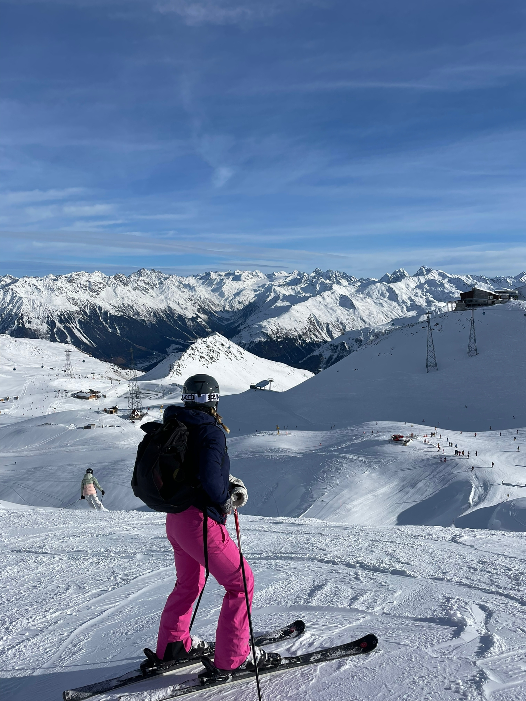
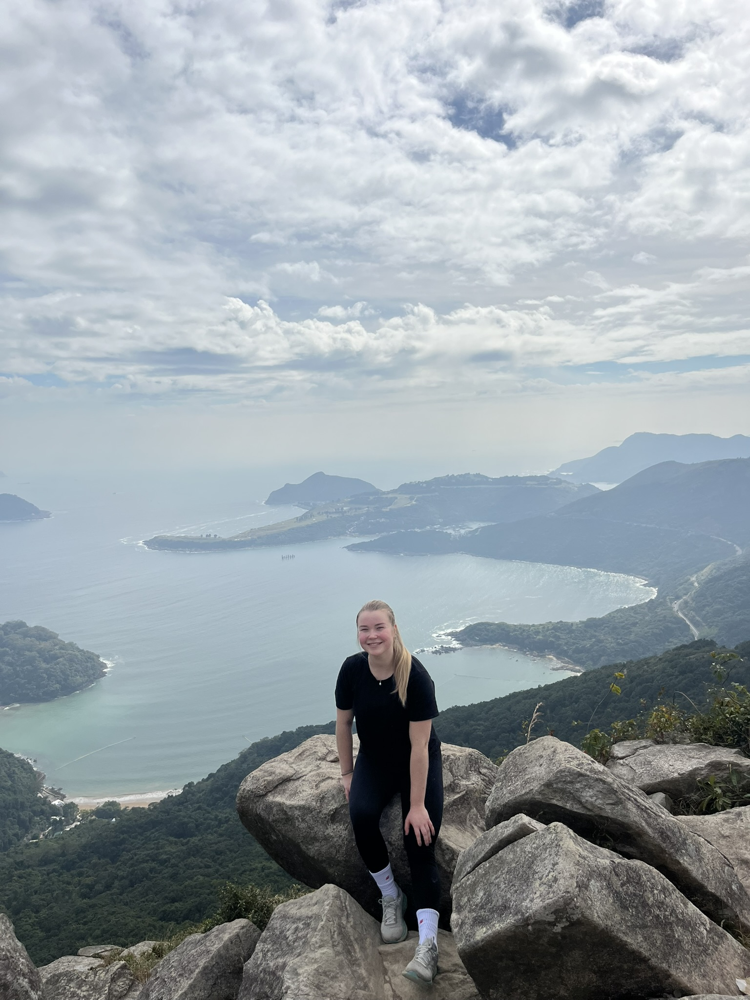
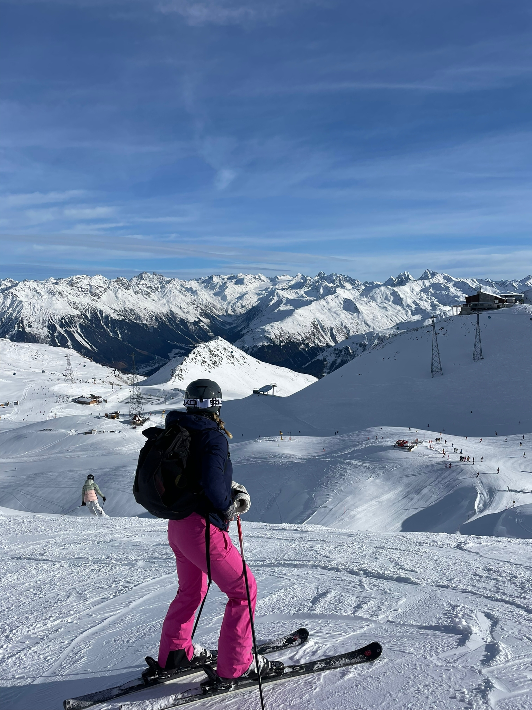
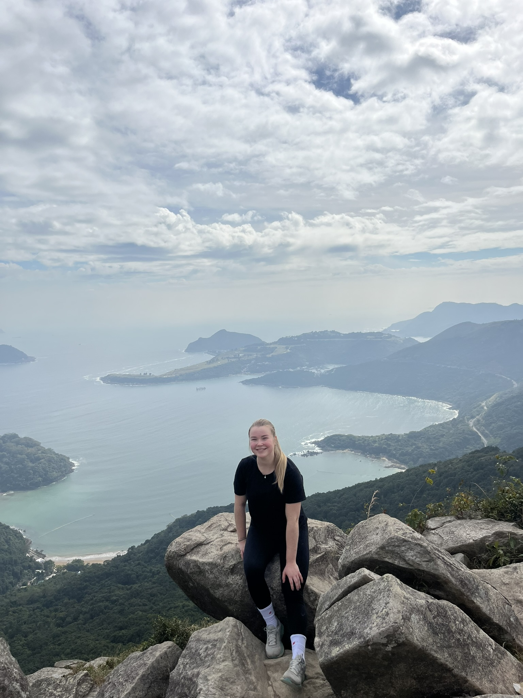

About Me
I’m an ambitious and curious person who loves learning new things and taking on challenges. I’m particularly interested in how data, machine learning, and AI can be used to solve real-world problems. I’m eager to find new opportunities in these fields and continue developing my skills.
Studies
I am a first-year master’s student at Aalto University, majoring in Machine Learning, Data Science, and Artificial Intelligence. I have a background in bioinformation technology and computer science, and I completed my bachelor’s degree in spring 2025 with honors (GPA 4.2/5.0).
Work life
In autumn 2025, I am working as a Software Specialist at the Natural Resources Institute Finland (Luke) and as a Teaching Assistant at Aalto University. At Luke, I develop full-stack applications and apply open-source software to support the Statistics Production team. At Aalto, I assist in teaching Machine Learning and Basic Python Programming courses. I enjoy my current work, but in 2026 I’m looking for new opportunities in data science, machine learning, or AI-related roles.
Hobbies and interests
I believe having hobbies alongside work and studies is important for maintaining a balanced life. I enjoy learning new skills through my hobbies, but I don’t take them too seriously. I like outdoor activities such as hiking, golf, and skiing, as well as CrossFit and ball games like badminton and tennis. I also work occasionally as a CrossFit coach, which feels like a hobby to me.
 



Projects
- Machine learning project for predicting online education outcomes – I am particularly interested in which factors influence online education outcomes, as COVID-19 placed my generation in online learning. This was one of my first machine learning projects, where I trained several different models from scikit-learn to predict online education outcomes. I compared the models to see how well they performed in the classification task.
- Education, employment and economy visualization project – Interactive visualization project exploring how European education, employment, and the economy relate to each other. The data was obtained from Eurostat Sustainable Development Goals, and the visualizations were created using Plotly.
- ML project for stress detection based on Reddit and Twitter posts – I am currently working on this project. It is a machine learning project where I apply and practice natural language processing. I compare different machine learning models for stress detection and explore key findings from the text data. This is a very interesting topic in the era of social media.
- Data visualization library – This was my very first computer science project. I designed it with PyQt6, and while the code is quite low-level, it taught me a lot about building applications from scratch.
- Bachelor's thesis – The topic of my thesis was Contrastive Learning for Molecular Property Prediction Tasks. The thesis taught me about different deep learning models and how they are applied to real-world problems. It received a grade of 5/5.